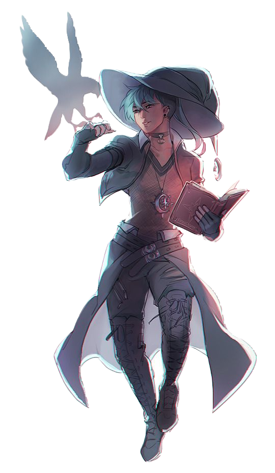

Nuevo personaje!!!

¡Conoce a Blaze, el mago ardiente con un toque flamígero en el nuevo juego "Reinos en Llamas"!
Este hechicero intrépido tiene el don de controlar el fuego como nadie más. Con una túnica de
tonos rojizos y una mirada chispeante en sus ojos, Blaze es el maestro indiscutible de las llamas.
¿Por qué elegir a Blaze? ¡Porque donde hay humo, hay fuego! Su magia incendiaria no solo causa
estragos en los enemigos, sino que también ilumina incluso las situaciones más oscuras. Ya sea
desencadenando bolas de fuego devoradoras o creando escudos ardientes, Blaze siempre está listo
para avivar la llama de la victoria.
La razón detrás de su elección como mago es simple: en un mundo lleno de criaturas místicas y
desafíos épicos, tener a Blaze en tu equipo no solo te brinda poder, sino que también aporta
ese toque candente que hace que cada batalla sea emocionante. ¡Así que únete a Blaze, enciende
la aventura y haz que tus enemigos se derritan ante la magia de las llamas!